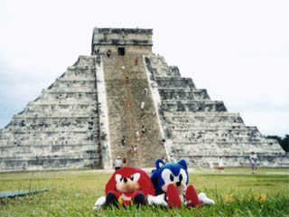

| ソニックチーム南米へ行く（２） | |
|
[ソニックチーム南米へ行く(1)][ソニックチーム南米へ行く(3)]
26日、成田空港からアメリカのダラス空港経由でメキシコのカンクンへ飛ぶ。
27日、時差ボケに慣れる間もなく車を飛ばす。最初に訪れた遺跡はメキシコ最大のマヤ遺跡「チチェンイツァー遺跡」だ。
28日は「トゥルム遺跡」へ向かう。トゥルムはカリブ海に直接面している。 29日。船でコズメル島の「サンヘルバシオ遺跡」へ。南の島に浮かぶ遺跡なんて『ソニック３』のシチュエーションそのものではないか！ つづく。 |  カンクンのホテルはオーシャンビュー |
 のませろ〜 |
|  チチェンイツァーでなごむ |
 やらずにゃおれないキメポーズ |
| SONIC TEAM 1998 | |